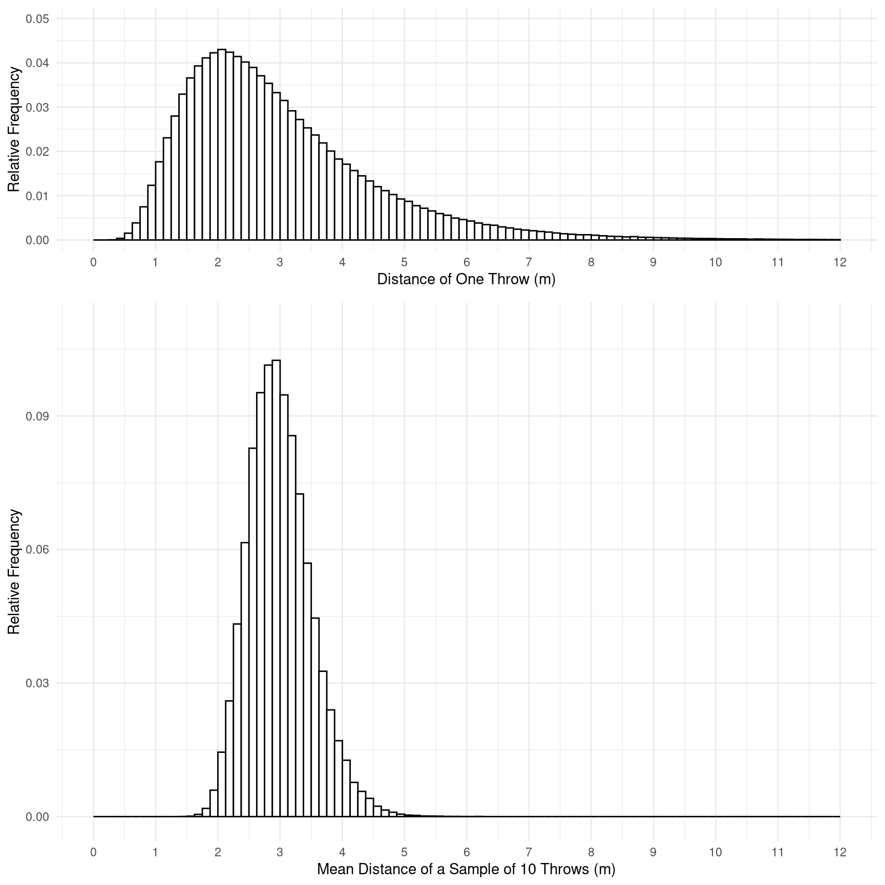
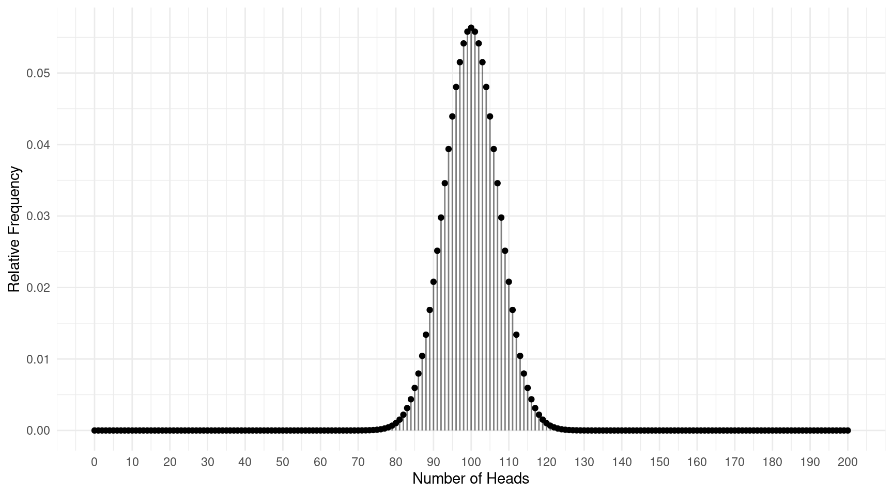
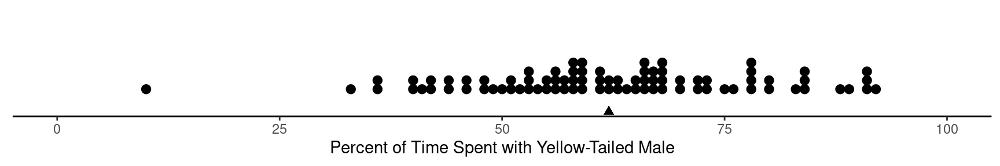
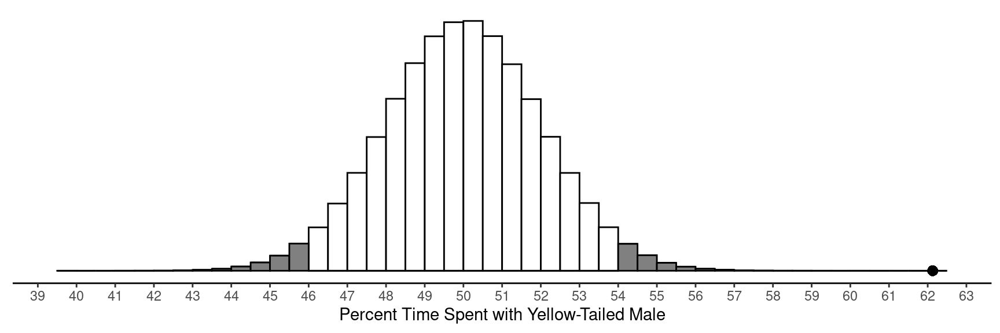
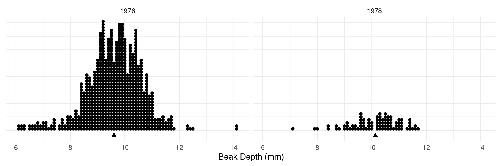
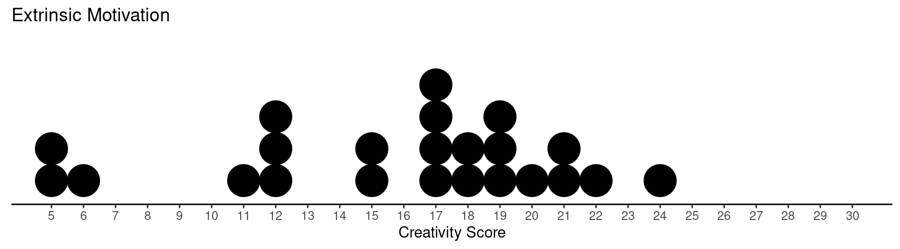
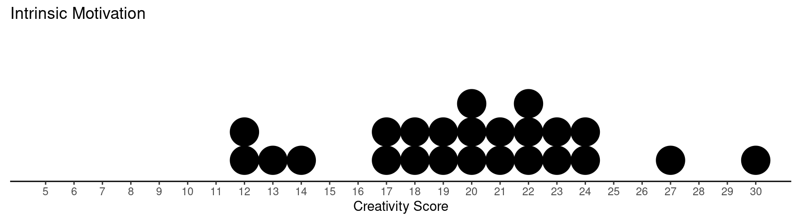
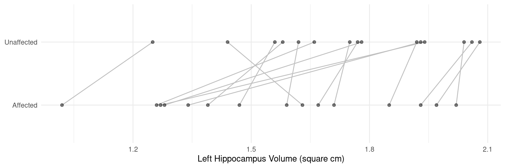

You can also download a PDF copy of this lecture.
Example: Suppose we are studying the distance that a model trebuchet will throw an object. The first histogram shows the distribution of the distance from a million observations of a single throw. The second histogram shows the distribution of the means from a million samples of \(n\) = 10 throws each.
 Both distributions have a mean of 3 meters. The second distribution has a standard deviation of 0.5 meters. Suppose we were to estimate the mean distance the trebuchet will throw an object using the mean of a sample of \(n\) = 10 observations. Where is our estimate likely to be? What is the margin of error?
A statistically significant result is one that is decidedly not due to “ordinary variation” (i.e., “not due to chance” or “not a coincidence”).
Example: Suppose I flipped a fair coin 200 times and observed the number of times it came up heads. Now suppose I did this a million times. The plot below shows the distribution of the number of times the coin comes up heads out of 200 flips.  This distribution is clearly normal in shape, and it has a mean of 100 and a standard deviation of approximately 7. Now suppose we have the question of if a coin we found on the ground is fair, so we flip the coin 200 times and see what happens. Where is the number of heads likely to be if the coin is fair? Would we conclude that the coin is fair if the number of heads is 110, 120, or 130?
Example: Consider data from a study of mate preference of platies.1
 Out of \(n\) = 84, the mean percent of time females spent with yellow-tailed males is approximately \(\bar{x}\) = 62.1. Is this result statistically significant?
Assume that female platies do not have a preference (or aversion) to yellow tails. The figure below shows the mean percent time spent with the yellow-tailed male from a million hypothetical studies under this assumption. This distribution has a mean of 50 and a standard deviation of 2. What is the margin of error? Did the study shown above produce an outlier? Was it statistically significant? 
Frequently when looking at the relationship between two variables we consider the distribution of a response variable (also known as a “dependent variable”) for each value of an explanatory variable (also known as an “independent variable”). The question we often have is if/how does the distribution of the response variable change when the value of the explanatory variable changes.
Example: Dot plots of samples of observations of beak size from before (1976) and after (1978) a drought in 1977.  What are the response and explanatory variables?
Example: Creative writing students were “primed” with either extrinsic or intrinsic motivation. They were then asked to write a poem in the Haiku style about laughter. Each poem was then scored for “creativity” on a 40-point scale by judges.
 What are the response and explanatory variables?
Example: The volume of the left hippocampus was measured for monozygotic (identical) twins discordant for schizophrenia.2  What are the response and explanatory variables?
An experiment is a controlled study that has the purpose of investigating the relationship between an explanatory variable and a response variable.
An observational study is an uncontrolled study that has the purpose of investigating the relationship between an explanatory variable and a response variable.
A survey is a study where we select a subset of units from a population of such units for the purpose of making inferences about the distribution of all units (i.e., the population distribution).
We will clarify the distinction between an experiment and an observational study later in the course when we discuss the concept of randomization. But for now “controlled” means that the researchers control the explanatory variable in the sense that they determine the value of the variable for each experimental unit.
Basolo, A. L. (1990). Female preference predates the evolution of the sword in swordtail fish. Science, 250, 808–810.↩︎
Suddath, R. L., Christison, G. W., Torrey, E. F., Casanova, M. F. and Weinberger, D. R. (1990). Anatomical abnormalities in the brains of monozygotic twins discordant for schizophrenia. New England Journal of Medicine, 322(12). 789–794.↩︎
{kind=link}
{kind=link}